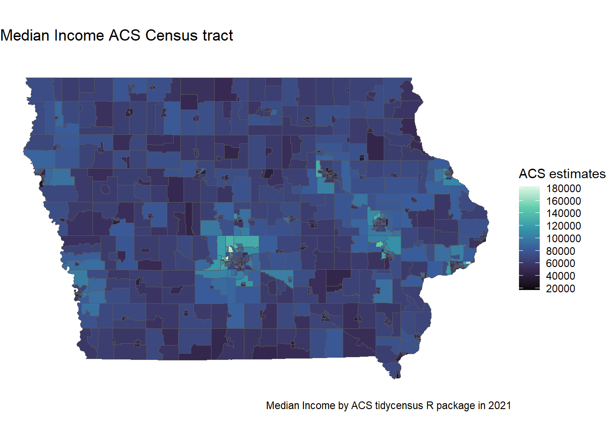

#Imports for both Graph and Map
library(tidycensus)
library(tidyverse)
library(scales)
library(plotly)
library(ggiraph)
#Grabing median_income for bar blot
median_income <- get_acs(
geography = "county",
variables = "B19013_001",
state = "IA",
year = 2021
)
#View the mid range of countys mean income
median_income_data <- median_income %>%
#reducing the number of countys the graph can display
slice(floor(99 * 0.25):floor(99 * 0.75)+1) %>%
#ordering from estimate highest to estimate lowest
arrange(desc(estimate))
#The Bar plot
md_bar_plot <- ggplot(median_income_data, aes(x = estimate,
y = reorder(NAME, estimate),
tooltip = estimate,
data_id = GEOID)) +
#Generating the error bars
geom_errorbar(aes(xmin = estimate - moe,
xmax = estimate + moe),
width = 0.5,
size = 1) +
#Coloring the estimate dot
geom_point_interactive(color = "darkblue", size = 1.5) +
#Bottom Label range
scale_x_continuous(labels = label_dollar()) +
#County names and removing the Unnecessary words
scale_y_discrete(labels = function(x) str_remove(x, " County, Iowa|, Iowa")) +
#Graph labeling for views convince
labs(title = "Median Income 2021 ACS",
#subtitle = "Counties in Iowa",
caption = "Data acquired with R and tidycensus. \nError bars represent margin of error around estimates of Median income.",
x = "ACS Estimate Mean Income",
y = "Counties in Iowa") +
#Text Sizing
theme_minimal(base_size = 8)
#Making the graph interactive
md_bar_plot_interactive <- girafe(ggobj = md_bar_plot) %>% girafe_options(opts_hover(css = "fill:purple;"))
#The Map
median_income_map <- get_acs(
geography = "tract",
variables = "B19013_001",
state = "IA",
year = 2021,
geometry = TRUE
)
# The Map
md_chorpleth_map <- ggplot(median_income_map, aes(fill = estimate)) +
#The map display
geom_sf() +
#Empty theme of the map
theme_void() +
#Colors the map
scale_fill_viridis_c(option = "G", n.breaks = 10) +
#Information
labs(title = "Median Income by Census track",
subtitle = "",
fill = "ACS estimates",
caption = "Median Income by ACS tidycensus R package in 2021")Both a bar plot, and chorpleth map were made from the American Community Survey (ASC) data using Tidycensus library in R.
md_bar_plot_interactivemd_chorpleth_map